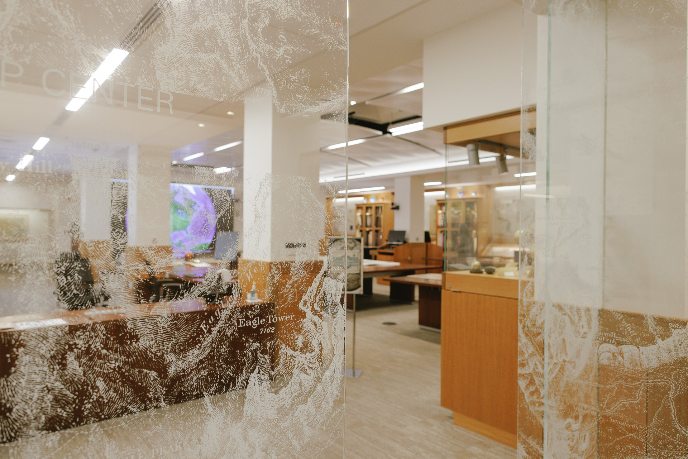

Celebrating 10 Years
Thursday, May 21 — Afternoon
- Public talk by the Global Policy Lab
- Donor event with Rick Prelinger
- And more...
SUL as an Allmaps Innovator
Why Allmaps matters for DRMC
-
Open toolkit built on IIIF — no GIS training
required to georeference maps
-
Lowers the barrier for researchers, students, and the public
-
Gives us a clear direction for integrating DRMC collections into
Earthworks
allmaps.org
Developing "Core Collections"
-
We lack cohesive, public-facing descriptions of what makes DRMC
special
-
What we have tends to revolve around donors, not
intellectual themes
-
Hard to communicate our strengths — to researchers, funders, or
new colleagues
The maps that make us, us
Core Collections will help us:
- Communicate our strengths clearly
-
Showcase collections in discovery and outreach
(...including a fall exhibition!)
-
Steward with intention — acquisitions,
scanning, conservation, special projects
Thank you
10th Anniversary · Allmaps Innovator · Core Collections